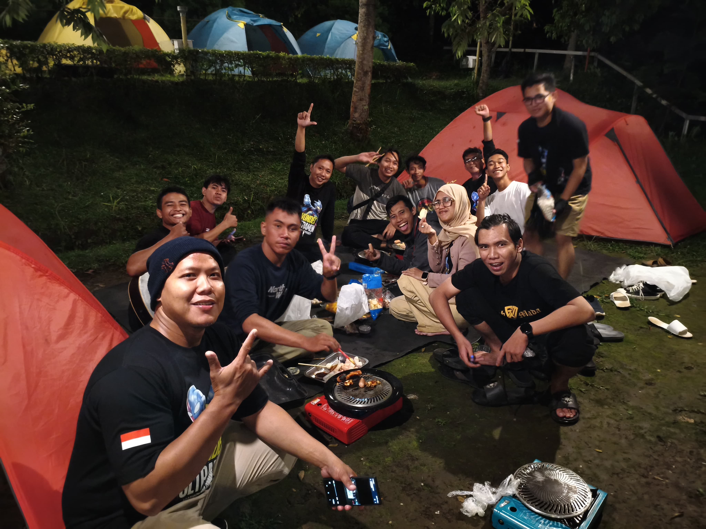

Camp Sidomukti adalah salah satu kegiatan komunitas Wonder Ultramen yang digelar pada April 2025. Kegiatan ini diikuti oleh mahasiswa dari berbagai kota seperti Jakarta, Tuban, Solo, bahkan Balikpapan.
Camp ini diadakan sebagai bentuk kebersamaan, liburan, dan pembelajaran terbuka bersama komunitas.
Artikel lengkap dapat dibaca melalui Kompasiana:
Baca selengkapnya →